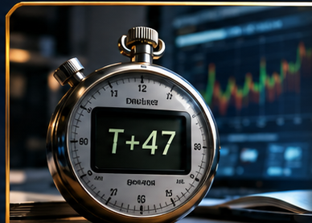
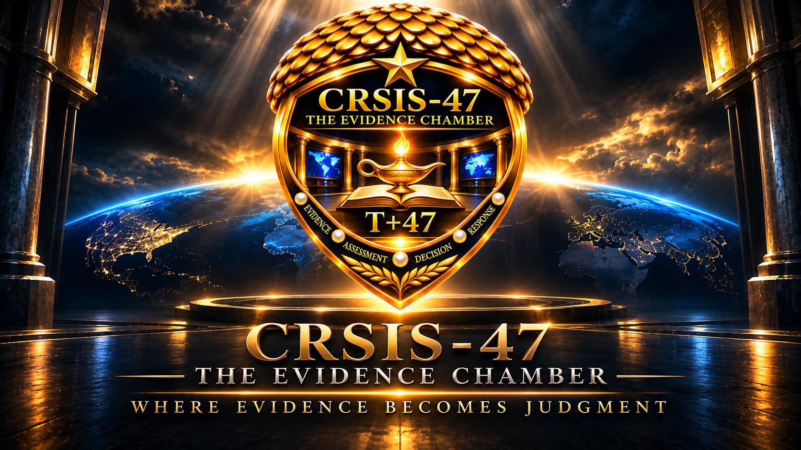

Foundational case
Catalog recordBinance
Digital-asset risk, accountability, and evidence-based security decisions.
Explore cybersecurity case studies, books, and research on how leaders assess changing evidence, confront uncertainty, and make consequential decisions.
Six investigations in the approved CRSIS-47 progression. Browse the approved case-study series. Four cards are visible at a time; scroll to explore more. Cases 005–006 remain in development.
Digital-asset risk, accountability, and evidence-based security decisions.
A leadership decision exercise involving progressive evidence, a potential false alarm, and consequential judgment.
What evidence should a leader require before signing a promise of 90-day readiness?
The July 2024 Falcon content-update incident, operational disruption, recovery, and the difference between benign intent and harmless outcomes.
Compromised software trust, supply-chain exposure, and decisions made under evolving evidence.
Cyber disruption, healthcare dependencies, and the operational cost of delayed decisions.
A growing collection on cybersecurity, leadership, uncertainty, and the human cost of decisions. Titles awaiting catalog verification are not invented or advertised as released.
 Cover temporarily unavailable
Cover temporarily unavailableCompleted manuscript · Unpublished
A permanent home for the CRSIS-47 research program, investigations, prototypes, and evidence-based methodology.
Theory, literature synthesis, and the scholarly foundation for trustworthy cyber incident assessment.
Enter Division 01 ›Incident reconstruction, identity and access analysis, control failures, and evidence verification.
Enter Division 02 ›System design, test environments, controlled demonstrations, and prototype development.
Enter Division 03 ›
T+0 to T+47 progressive evidence, outcome assessment, calibration, and research governance.
Enter Division 04 ›Public descriptions below distinguish ongoing scholarly work from validated results.
Belief revision, temporal reasoning, and uncertainty-aware assessment. Research refinement is distinct from experimental execution.
Back to Research & Laboratories ↑Review source provenance, investigative chronology, competing explanations, and unresolved questions. Educational investigations are not controlled dissertation experiments.
Back to Research & Laboratories ↑Architecture and prototypes are documented with version histories, audit boundaries, and explicit limitations. Demonstrations are not validated findings.
Back to Research & Laboratories ↑MALICIOUS, BENIGN, and UNCERTAIN outcomes are evaluated under the locked research design. Experimental execution remains subject to authorization.
Back to Research & Laboratories ↑FOUNDER · AUTHOR · CYBERSECURITY RESEARCHER
Cybersecurity is not only a question of what technology can detect. It is a question of what people can responsibly conclude—and when.
I founded CRSIS-47 to explore the difficult space between an emerging signal and a defensible decision. Through research, professional case studies, and books, I examine how evidence changes, how uncertainty should be communicated, and how leaders can act without confusing speed with certainty.
My work draws on cybersecurity practice, leadership, education, and a continuing commitment to accountable decision-making. The Evidence Chamber brings these interests together in one public institution: a place to investigate, challenge assumptions, preserve sources, and explain what the evidence actually supports.
Graduated with distinction, 2026
Capitol Technology University · In progress
Belief revision, temporal reasoning, and uncertainty-aware assessment
Our books invite readers to confront the human cost of waiting. Our case studies ask leaders to make decisions with imperfect information. Our research examines the methods that could make those judgments more trustworthy. Each serves a different audience; all share the same commitment to evidence and intellectual discipline.
For inquiries about the T+47 book series or CRSIS-47 research.
Please identify whether your inquiry concerns the literary series or the academic project.

Return to Top ↑